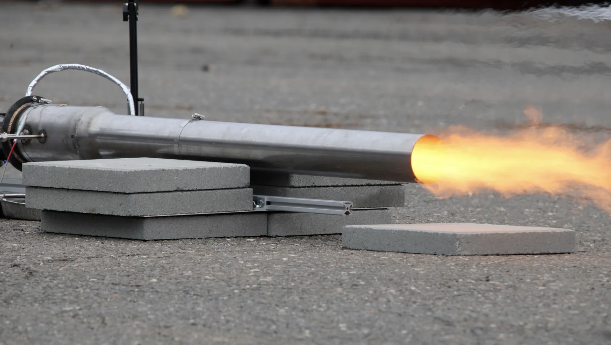
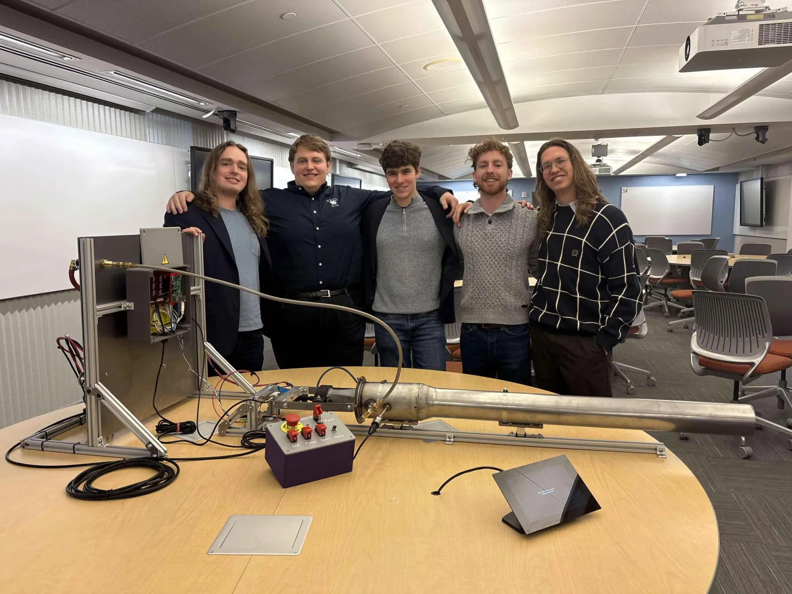
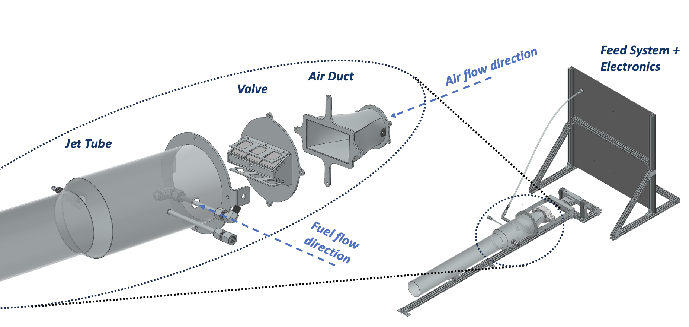
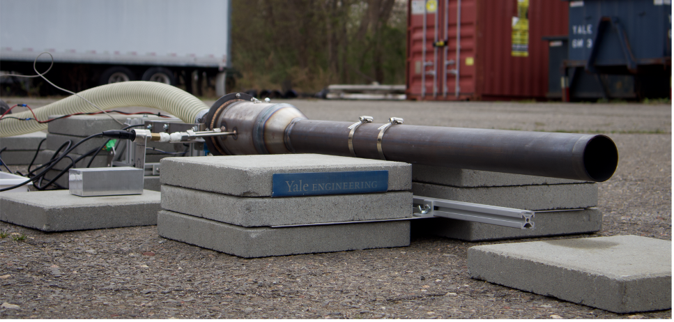
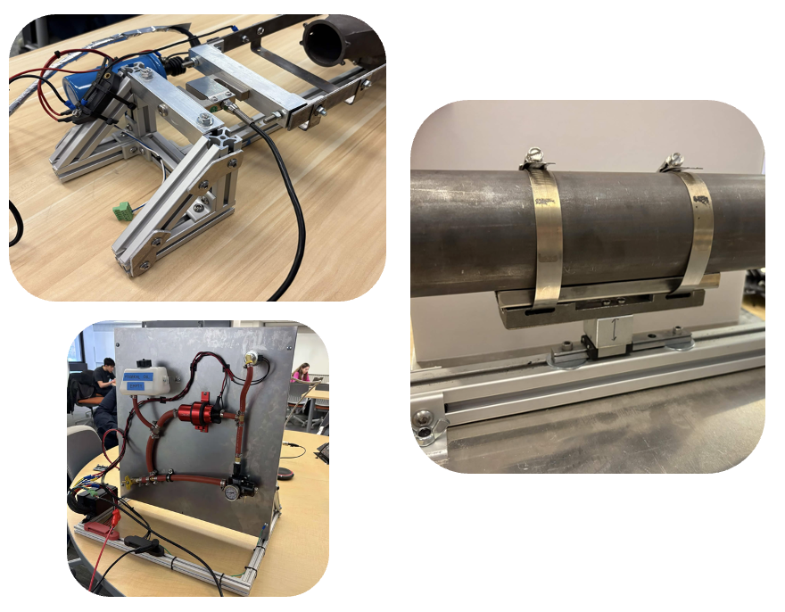
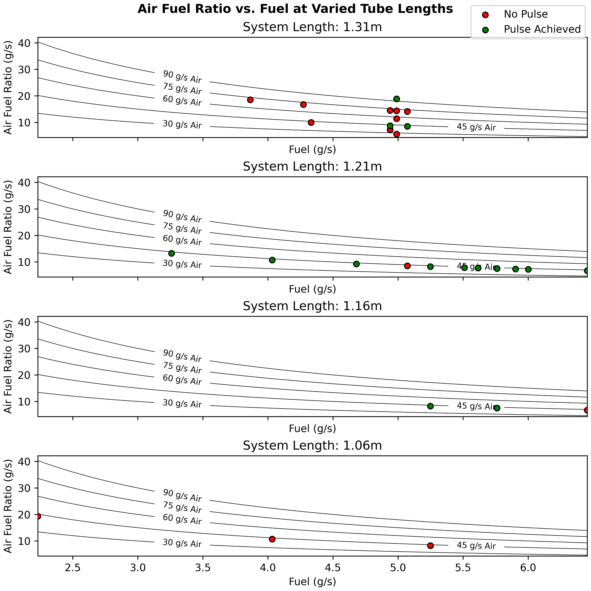
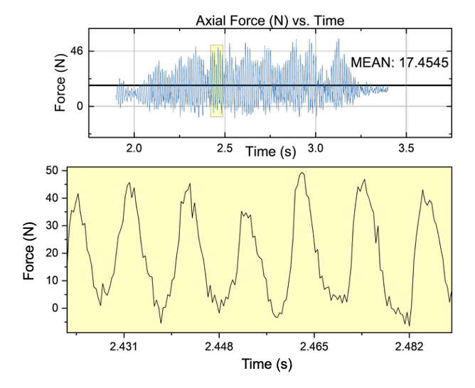
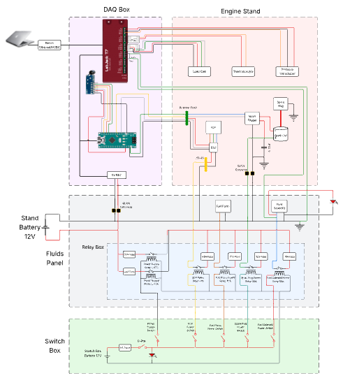

Remote Operation
Fuel pump, solenoid valve, spark ignition, and forced air were controlled away from the engine.
Mechanical Engineering Design
A senior capstone project focused on designing, manufacturing, and hot-fire testing a custom valved pulsejet engine. The project combined propulsion theory, fluid-system design, controls, data acquisition, safety planning, and repeated test iteration.

The goal was to create a low-cost, low-part-count propulsion platform that could be designed, built, and tested by an undergraduate team. Pulsejets avoid the compressors and turbines of conventional jet engines while still requiring real combustion, controls, instrumentation, and safety work.
Our team focused on three goals: remote engine operation, engine characterization, and analysis of cyclic pulsing behavior.


The engine was built around the jet tube, reed valve, air duct, and feed/control system. The jet tube geometry controlled the resonant behavior, while the reed valve worked as a high-frequency check valve that admitted air during intake and closed during combustion.
The fuel and electronics were separated from the hot engine where possible, with remote control for spark, fuel delivery, forced air, and data collection.
Early fit checks used printed prototypes before moving into final metal hardware. The reed valve components were water-jetted and welded, duct walls were stamped using printed tooling, and the jet tube was fabricated from stock steel tubing.
Support hardware used steel near hot components and aluminum 8020 for the surrounding structure.


Testing was built around an EHS-reviewed procedure with defined operator roles, a test card, hazards and mitigations, and a clear-zone process. The setup was designed for fast turnaround while keeping fuel, ignition, forced air, and data collection controlled from a safe distance.
Fuel pump, solenoid valve, spark ignition, and forced air were controlled away from the engine.
Thrust, chamber pressure, chamber temperature, and valve state were recorded at 2500 Hz.
Trial turnaround improved from about 30 minutes to about 2 minutes across the campaign.



The engine achieved pulsed combustion during hot-fire testing. Load cell data showed a clear periodic thrust signature, with a time-averaged thrust of about 17.5 N and peak pulse amplitudes near 50 N.
Frequency analysis of load cell and audio data showed a dominant peak at 98 Hz, identifying the engine’s fundamental operating frequency. The operating envelope also showed how tube length, fuel flow, and startup airflow changed whether the engine pulsed cleanly.
This project showed me that propulsion hardware is never just the engine. The test stand, safety procedure, instrumentation, controls, and iteration loop matter just as much as the combustion hardware. Small changes in reed material, fuel flow, tube length, and startup airflow could determine whether the engine pulsed cleanly, burned without resonance, or failed to sustain combustion.